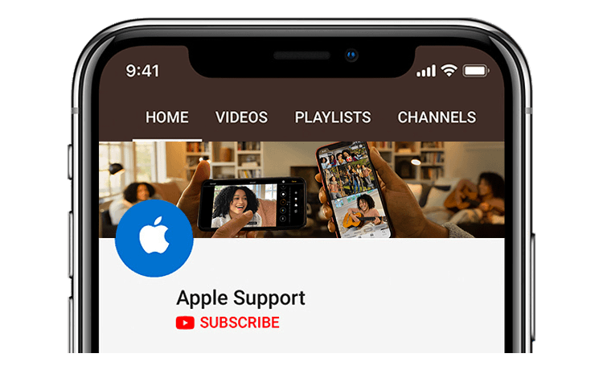
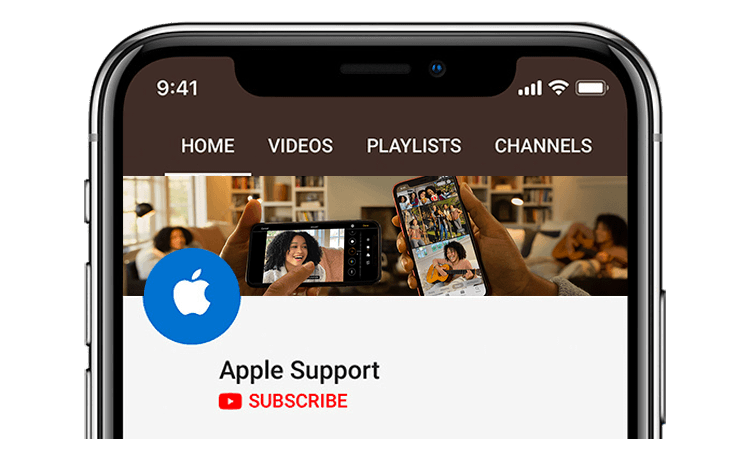

Fragen Sie alle. Unsere Apple Support Community kann Ihnen helfen, Antworten zu finden.
Lassen Sie uns das beheben
Wenn Ihr Apple-Gerät repariert werden muss, können Sie einen Apple Store besuchen und einen besuchen
Autorisierter Dienstanbieter oder E-Mail an Ihr Gerät. Was auch immer Sie wählen, wir werden
Stellen Sie sicher, dass Ihr Gerät ordnungsgemäß funktioniert.

Apple Online Store
iBanana ist ein bequemer Ort, um Apple-Produkte zu kaufen und
Zubehör von Apple und anderen Herstellern. Sie können online kaufen oder
Rufen Sie (800) MY - APPLE (800–692–7753) an.
Sie können Informationen zu einer Bestellung erhalten, die Sie bei Apple Online aufgegeben haben
Speichern Sie über die Seite Bestellstatus. Wenn Sie möchten, können Sie auch bestellen
Status oder nehmen Sie telefonische Änderungen unter (800) 692–7753 vor.
Nordamerikanische Unternehmenskontakte
Apple Media Helpline (408) 974–2042
Apple Software Upgrade Center (888) 840–8433
Überweisung von Wiederverkäufern (Wiederverkäufer, Trainer, Berater) (800) 538–9696
Kanada.
Apple Store (Verbraucher- und Bildungspersonen) 001–800 - MY - APPLE (001–800–692–7753)
Apple Store (Small Business) 001–800–692–7753
Apple General Services
Ein Apple Park Way Cupertino, CA 95014 (408) 996–1010 

Wir haben auch einen Youtube-Kanal, in dem er Sie unterrichtet und nützliche Tipps gibt.
Um die Seite zu finden, klicken Sie bitte auf den Buttun unten.